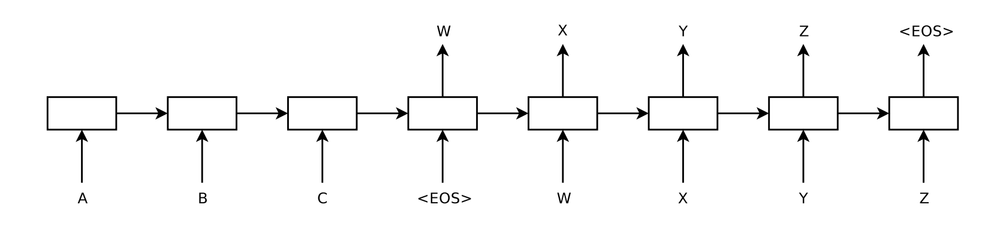

A lightweight seq2seq implementation inspired by Sutskever, Vinyals, and Le (NIPS 2014). It uses an LSTM encoder to compress the input sequence into a context vector, then an LSTM decoder to generate the output sequence.
Overview
LSTMs use gating mechanisms to handle long sequences and mitigate vanishing gradients. In the encoder–decoder setup, the encoder processes $$X=(x_1,\dots,x_T)$$ into a final hidden state that acts as a context vector; the decoder then generates $$Y=(y_1,\dots,y_{T'})$$ conditioned on that context.
Architecture

Limitations and next steps
A single fixed-size context vector can bottleneck long sequences. Attention mechanisms address this by letting the decoder attend to different encoder states across time.
Suggested reading
- Sequence to Sequence Learning with Neural Networks (Sutskever et al., 2014)
- Neural Machine Translation by Jointly Learning to Align and Translate (Bahdanau et al.)
- Effective Approaches to Attention-based Neural Machine Translation (Luong et al.)